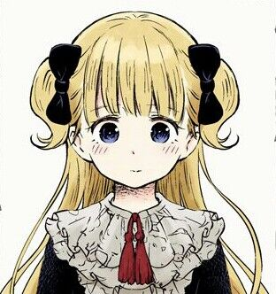
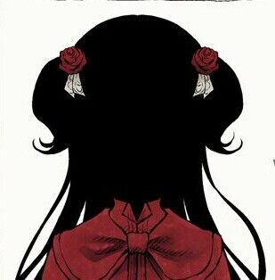
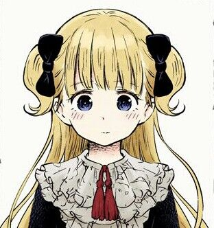
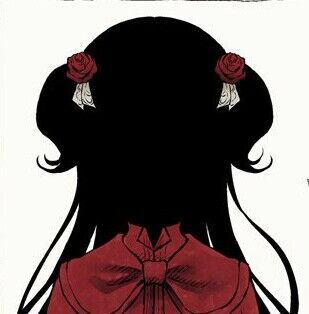

Main Characters
Emilyko

Emilyko (エミリコ Emiriko) is the main protagonist of the Shadows House series and narrates some of the chapters. She is a Living Doll working as a maid in the Shadows House and as a "face" of Kate Shadow.
Kate

Kate (ケイト Keito) is a young girl in the Shadow family, a noble family. She is the main protagonist along with her "Living Doll", Emilyko.
She wears as clothes a red dress with a white frill underneath. She also wears a red jacket with a bow of the same color. She has white socks with red shoes.
Emilyko
Emilyko (エミリコ Emiriko) is the main protagonist of the Shadows House series and narrates some of the chapters. She is a Living Doll working as a maid in the Shadows House and as a "face" of Kate Shadow.
Kate
Kate (ケイト Keito) is a young girl in the Shadow family, a noble family. She is the main protagonist along with her "Living Doll", Emilyko. She wears as clothes a red dress with a white frill underneath. She also wears a red jacket with a bow of the same color. She has white socks with red shoes.